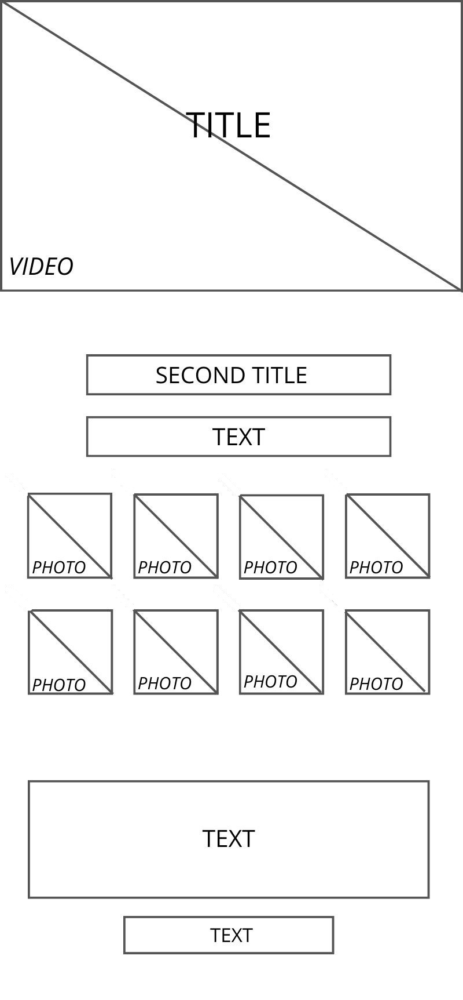
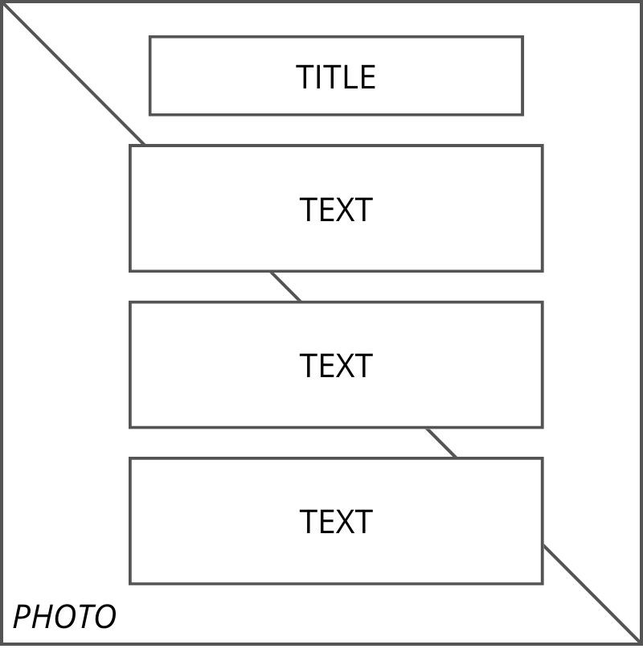

Project Management Plan
- Benchmarking
- Obiettivo:
L'idea alla base di questo progetto è voler creare un sito che permetta di cercare i concerti disponibili nelle principali città d'Italia, attraverso un filtro basato sulla scelta di quest'ultima. Nella prima pagina troviamo un video di apertura con un titolo, è presente una freccia interattiva che permette all'utente di andare direttamente al menù. Il menù è composto da un titolo, una breve frase introduttia, che invita a compiere un'azione, e una seria di città accompagnate da un'immagine, sulle quali è possibile cliccare. Infine troviamo una breve descrizione del sito accompagnata dalla documentazione e dai crediti. Cliccando su una città si aprirà la lista dei concerti disponibili in quel determinato luogo, ogni concerto è descritto tramite nome dell'artista, luogo e ora ed è accompagnato da un collegamento con Ticketone, per acquistare il biglietto, e con Spotify, per ascoltare le canzoni dell'artista. L'idea è quella d crecare un sito veloce, di immediata comprensione e sempre aggiornato con i nuovi eventi.
- Target utente:
Fascia dai 15 ai 45 anni, indipendentemente dal genere, dall'orientamento sessuale e dal reddito. La lingua scelta è l'italiano, non avendo considerato i concerti e gli eventi al di fuori del territorio italiano.
- Competitors:
Esistono dei competitors diretti: canzoni.it, rockol.it e vivoconcerti.com. Rockol.it permette di cercare concerti tramite data o città, e poi di acquistarli attraverso ticketone, ha però una grafica pco convincente. Canzoni.it offre un collegamento per acquistare biglietti per spettacoli dal vivo, non solo in Italia, inoltre pernette all'utente di visionare classifiche, leggere informazioni sugli artisti e i testi musicali, ascoltare alcune canzoni gratuitamente e vedere i video musicali. Infine vivoconcerti.com è il competitor diretto più simile, sia dal punto di vista delle funzionalità e sia per quanto riguarda la grafica, essendo ricco di immagini. Permette agli utenti di cercare concerti ma anche spettacoli e festival, c'è un collegamento con ticketone per l'acquisto dei biglietti e una sezione apposita per la musica elettronica; inoltre c'è la possibilità di registrarsi ad una newsletter. Le funzionalità sono simili a quelle del sito di cui mi sono occupata, Italy in Tour, solo che quest'ultimo prevede anche un collegamento con spotify per ascoltare i brani degli artisti e permette di cercare i concerti prevalentemente tramite città.
- Struttura e layout
- Architettura del sito:
- Home (sitoWeb.html)
- Eventi (citta.html)
- Documentazione
- Crediti
- Wireframe:


- Stile:
Il layout del sito è molto semplice e pulito, nonostantre sia ricco di immagini. La resposività del sito è stata curata nei minimi dettagli per porterlo adattare ai device mobili (S, M, L) e ai tablet. Il font utilizzato è Montserrat, di tipo sans-serif, chiaro e scorrevole, nonostante il sito sia dotato di pochi paragrafi scritti. I colori utilizzati sono il bianco e una particolare tonalità di azzurro (#0084bc); il sito è ricco di immagini di ottima definizione, che richiamano il colore azzurro, e di un video di apertura, il tutto accompagnato da un overlay per garantire una maggiore omogeneità.
- Linguaggi e strumenti
- I linguaggi web utilizzati sono: HTML, CSS, Javascript e un file json.
- Gli strumenti a supporto della progettazione utilizzati sono: Sublime Text 3, Github e Google Analytics.
- Per ulteriori informazioni rimandiamo alla pagina Crediti
Communcation strategy
- Obiettivi Comunicativi
- L'obiettivo è quello di far si che il sito venga conosciuto, frequentato e sopratutto utilizzato come punto di riferimento. Traducendo l'obiettivo in termini quantitativi si vogliono raggiungere almeno 50 visite uniche.
- Promozione
- Il sito ha come obiettivo quello di fare da tramite nella vendita di un prodotto. Per pubblicizzarlo si sono utilizzati gruppi Whatsapp, in modo da fidelizzare i primi clienti. Una volta che piccoli gruppi di persone avranno provato e testato l'affidabilità del sito, questo non avrà problemi ad espandersi raccogliendo sempre nuove persone.
- Valutazione dei risultati